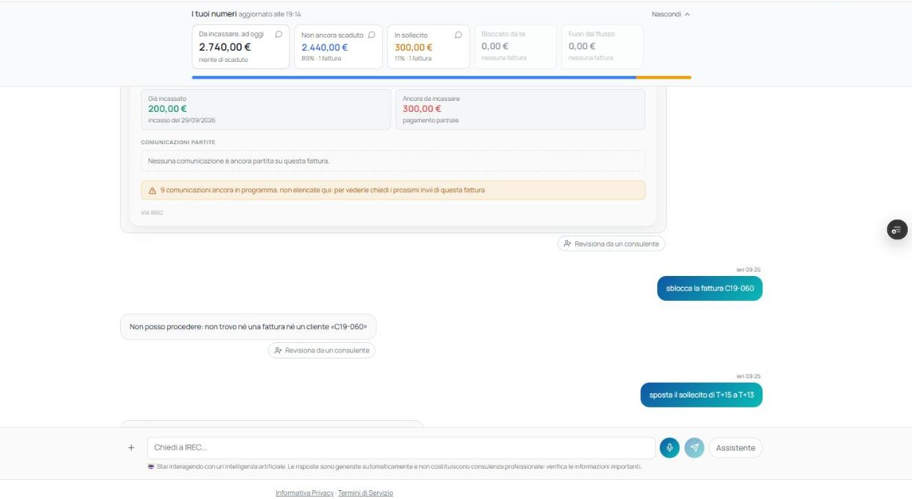
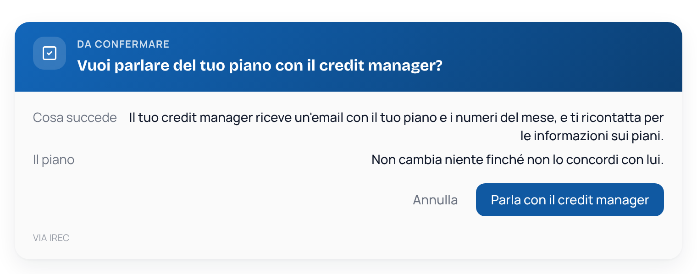
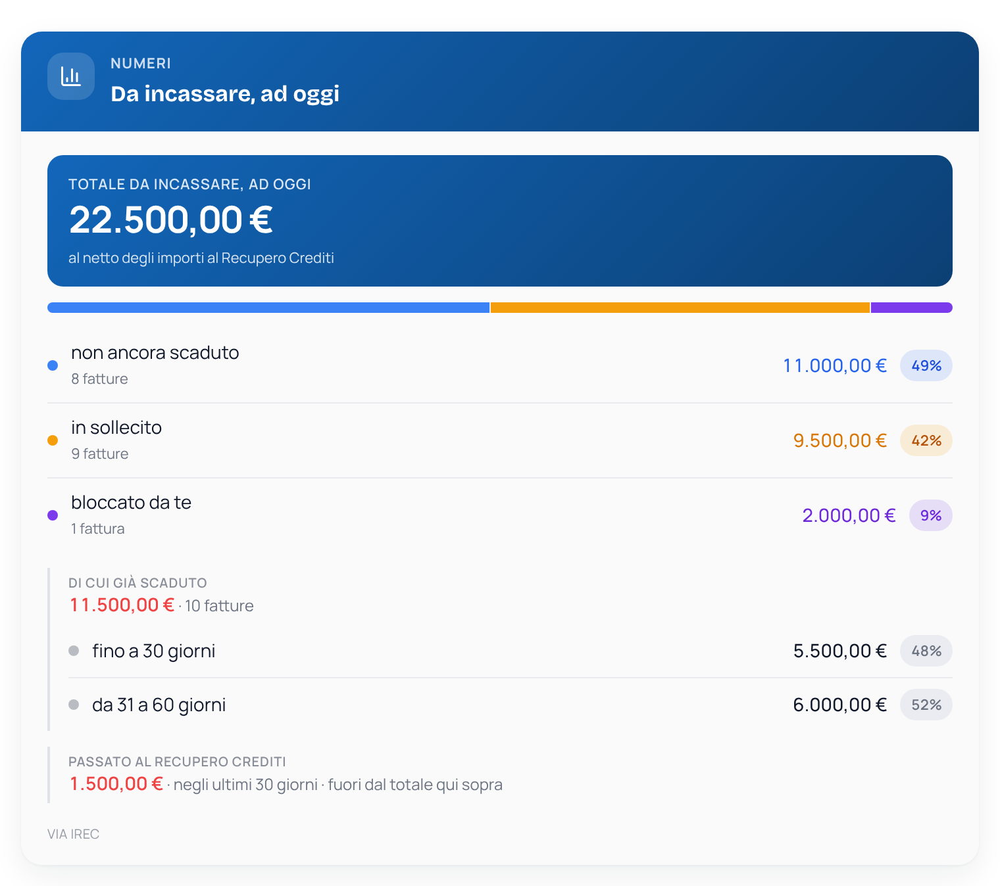
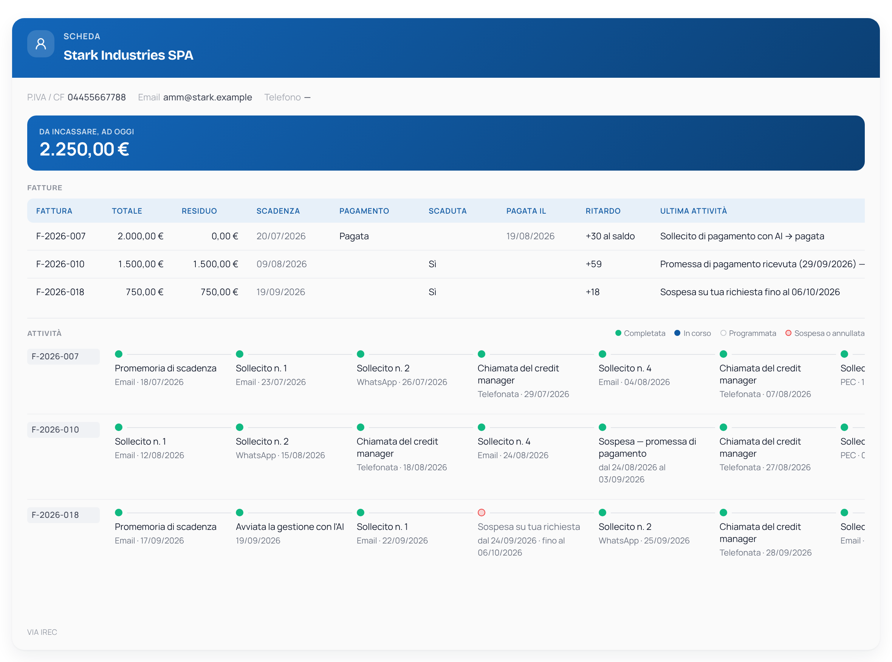
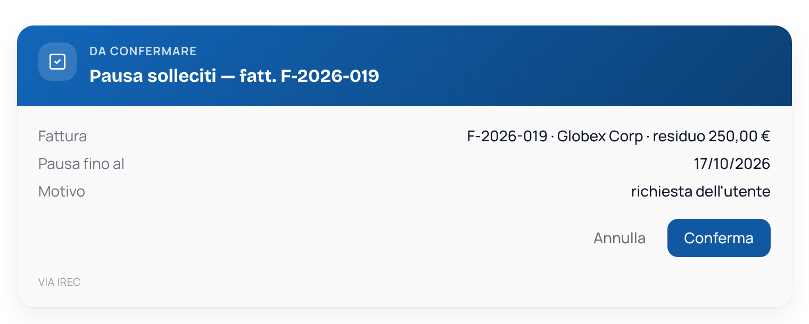
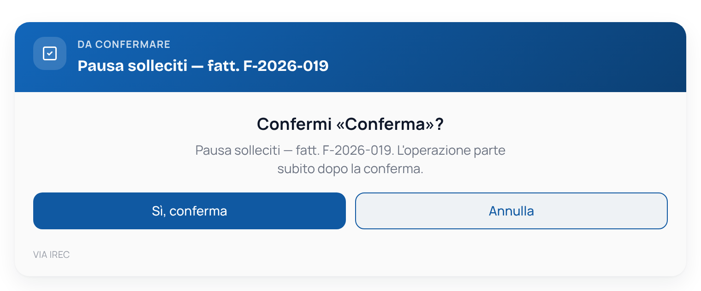
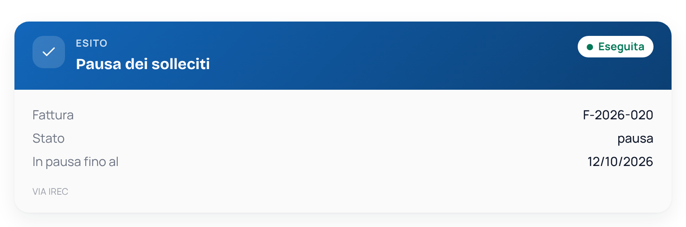
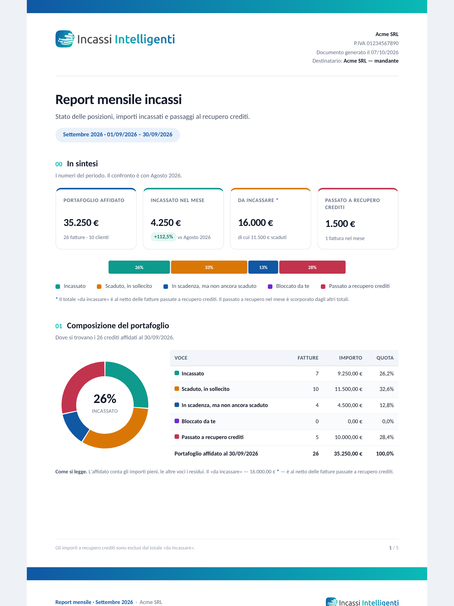

Incassi Intelligenti · per i servizi B2B ricorrenti
Un agente AI sollecita i tuoi clienti al posto tuo, con un credit manager Irec sempre al tuo fianco. Se una fattura non rientra, passa al nostro recupero crediti.
powered by
Il mercato
21,1%
delle grandi imprese paga alla scadenza, contro il 42,7% delle micro imprese
72,4%
delle grandi imprese paga comunque entro 30 giorni dalla scadenza
42%
delle imprese italiane paga puntuale
Micro imprese
42,7%
Piccole imprese
41,8%
Medie imprese
35,7%
Grandi imprese
21,1%
powered by
Fonte: CRIBIS, Studio Pagamenti, secondo trimestre 2026 (dati a giugno 2026)
Il problema
Canoni di manutenzione, pulizie, IT, logistica: fatture ricorrenti che i clienti mettono in coda. Un ritardo di venti giorni, ripetuto ogni mese, diventa credito fermo in modo permanente.
47 gg
di ritardo medio oltre la scadenza per le PMI italiane
73%
delle PMI senza un processo di sollecito strutturato
2,5 h
a settimana spese in solleciti fatti a mano
30 gg
la finestra critica: dopo, l'incasso spontaneo crolla
powered by
Fonte: elaborazione interna Irec su dati di portafoglio
Esempio illustrativo
Clienti: aziende, condomini e punti vendita · canoni mensili · piano Premium
Fatture mensili emesse tutte insieme, controllate a fine mese
Il controllo incassi si fa in Excel
I clienti grandi rispondono solo all'ufficio acquisti
Chi paga sempre in ritardo non viene mai richiamato
Un flusso per ogni scadenza, senza toccare nulla
L'agente risponde, registra promesse e date
Il credit manager Irec chiama i clienti più lenti
Chiedi in chat: "Chi paga in ritardo?"
powered by
Esempio costruito su un profilo tipo del settore, non un caso cliente
La soluzione

"Come stanno i miei incassi?" è la prima domanda.
powered by
Schermata dalla chat reale del collaudo
Quando l'AI non basta
Lo coinvolgi in chat quando vuoi, su tutti i piani
Configura con te tempi, canali e tono dei solleciti
Prende in mano contestazioni e casi delicati
Nel Premium è dedicato e chiama lui i tuoi clienti

L'AI fa il lavoro ripetitivo. Le decisioni che contano le prende un Credit Manager Irec, con te.
powered by
Come funziona
1
In chat colleghi cassetto fiscale e conto, insieme al consulente Irec. Circa 15 minuti.
2
Promemoria e solleciti su email, PEC e WhatsApp. Non scrive mai a chi ha già pagato.
3
Riconosce promesse, proroghe e contestazioni, ferma il flusso e ti avvisa.
4
"Chi mi deve di più?" "Metti in pausa la fattura 19." Numeri e azioni, sempre con il tuo ok.
powered by
Il metodo Irec
scadenza
T−2
Promemoria email
T+3
Email
T+6
WhatsApp
T+9
Chiamata CM
T+15
Email
T+19
Chiamata CM
T+25
PEC
T+30
Chiamata CM
T+35
PEC
T+45
Recupero Crediti Irec
Le chiamate del credit manager sono nel piano Premium; negli altri piani diventano email o WhatsApp. Un messaggio per cliente al giorno, mai solleciti arretrati all'avvio.
powered by
Flusso standard Irec, personalizzabile con il credit manager · giorni dalla scadenza della fattura
Cosa vedi

"Come stanno i miei incassi?"

"Com'è messo il mio cliente Stark con i pagamenti?"
powered by
Dati di prova di un mandante fittizio
Il controllo resta a te
1 · Chiedi

"Metti in pausa la fattura 19 per 10 giorni"
2 · Confermi

Niente parte senza il tuo clic
3 · È tracciato

Ogni azione resta nello storico
Stessa forma per pausa, blocco, proroga, incasso, recapiti, report e passaggio al recupero.
powered by
Dati di prova di un mandante fittizio
Chi fa cosa
powered by
Perché Incassi Intelligenti
| Cosa fa | Incassi Intelligenti | Competitor 1 | Competitor 2 | Competitor 3 |
|---|---|---|---|---|
| Fatture dal cassetto fiscale | Sì | No | No | Sì |
| Risponde ai debitori | Sì | Sì | In parte | No |
| Credit manager umano | Sì | No | Sì | No |
| Recupero e studio legale interni | Sì | No | Sì | No |
Software, persone e recupero crediti in un unico servizio.
powered by
Competitor 1: agente AI di sollecito · Competitor 2: servicer di recupero crediti · Competitor 3: software gestionale con solleciti
Chi c'è dietro
1987
Irec nel credito B2B da oltre 35 anni
50.800+
pratiche di recupero gestite
210 M€+
di crediti gestiti
85%
delle pratiche chiuse senza tribunale
Licenza 115 T.U.L.P.S. (Questura di Roma) · membro UNIREC · studio legale interno · conforme GDPR con DPO interno
Quotato su Euronext Growth Milan. Consulenza fiscale, finanziaria e manageriale per le PMI italiane, in tutta Italia.
44,3 M€
ricavi consolidati 2025
500+
dipendenti e collaboratori
powered by
Fonti: irec.it; Gruppo Allcore, comunicato sul bilancio 2025 del 24 marzo 2026
Vantaggi economici · simulazione
Esempio, un fornitore di servizi B2B: 250 fatture al mese da 900 € (2,7 M€ di fatturato), DSO di 85 giorni, 1 addetto ai solleciti, piano Premium.
+35.000 €
+48.600 €
+6.300 €
−28.800 €
+61.100 €
Persona dedicata
il sollecito lo fa l'agente
Insoluti in meno*
dal 3% all'1,2% del fatturato annuo
Interessi
risparmiati sulla cassa, al 4,37%
Costo del servizio
canone 1.788 € + 1% incassato 27.000 €
Vantaggio netto
ogni anno
DSO · giorni medi di incasso
da 85 a 65
già nel primo anno, grazie a Incassi Intelligenti
Così rientrano prima 145.000 € di cassa: soldi che oggi aspetti e che incassi in anticipo, una volta, in più rispetto al vantaggio annuo.
powered by
Esempio illustrativo, IVA esclusa · DSO −23% (risultato medio indicato da Irec) · *insoluti: ipotesi da validare
I piani · per i servizi ricorrenti consigliamo Premium
| Entry | Value · più scelto | Premium | |
|---|---|---|---|
| Canone (IVA esclusa) | 49 €/mese | 89 €/mese | 149 €/mese |
| Commissione | 1% sull'incassato | 1% sull'incassato | 1% sull'incassato |
| Fatture al mese | fino a 100 | fino a 200 | fino a 300 |
| Fattura oltre il piano | 1,50 € a fattura | 1,20 € a fattura | 0,80 € a fattura |
| Canali | Email, PEC | + chiamata del CM | |
| Flusso | Standard Irec | Personalizzato | + tono e firma |
| Credit manager | Configura | Configura e personalizza | Dedicato |
Prova: 30 giorni senza canone, con l'1% sugli importi effettivamente incassati. Carta o IBAN a garanzia; al 31° giorno parte il piano scelto, salvo disdetta.
powered by
Prezzi IVA esclusa
Come si parte, e dopo
DSO
Il numero da tenere d'occhio: i giorni medi tra la fattura e l'incasso. Lo misuri dal primo giorno e lo vedi scendere.
I primi 30 giorni
Oggi
Compili il form: ti indichiamo il piano più adatto
Entro 48 ore
Un consulente Irec ti richiama e attiva la tua utenza
Giorno 1
In chat colleghi cassetto fiscale e conto e decidi tempi, canali e tono con il consulente
Giorni 2–4
L'Agenzia delle Entrate rilascia i documenti: tempo tecnico
Giorno 5
Chiedi "com'è il mio portafoglio?": vedi il tuo DSO di partenza
Giorni 5–30
I solleciti partono da soli: ti coinvolge solo per le decisioni
Giorno 30
Primo report: incassato e DSO del primo mese
E poi: presidio ogni giorno, report e analisi
Ogni giorno
L'agente presidia ogni scadenza
Ti coinvolge solo per le decisioni; i casi delicati vanno al credit manager.
Ogni mese
Report mensile
Incassato, DSO, clienti più e meno puntuali, posizioni a rischio.
Ogni trimestre
Analisi dei KPI
Confronto con i trimestri precedenti: quanto è sceso il DSO.
Ogni anno
Report annuale
Il prima e il dopo Incassi Intelligenti: DSO, incassato e crediti salvati.
Quando serve
Recupero crediti Irec
Le fatture non rientrate passano al recupero, con lo storico già pronto.
powered by
I 30 giorni di prova partono da quando i tuoi dati sono a sistema

Ogni mese
Il numero che il CFO porta in riunione.
powered by
Report di prova di un mandante fittizio
Provalo sulle tue fatture
30 giorni senza canone · paghi solo l'1% di quello che incassi · ti richiamiamo entro 48 ore
Richiedi la prova
powered by
Gruppo Allcore